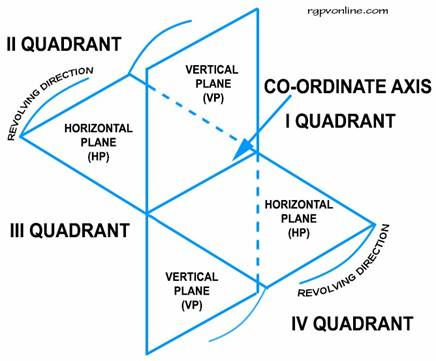
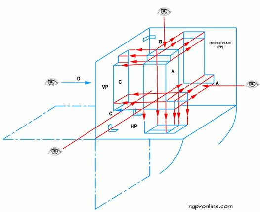
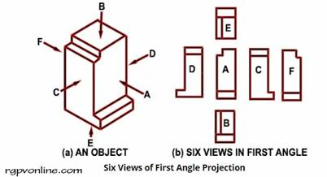
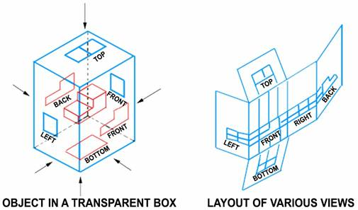

Methods of Orthographic Projection
The two methods of
projections are:
(i) First angle projections
(ii) Third angle projections
Figure below shows four quadrants formed by the intersection of horizontal and vertical planes. The intersecting line of the planes is called the co-ordinate axis. The revolving direction of the horizontal plane shows that quadrants I and III are ”open” but II and IV quadrants become “closed” when the horizontal plane coincides with the vertical plane. It is obvious that the closed quadrant has no use for the purpose of projectors as the views taken on these will overlap.

First Angle Projections. This method of projection is popular in Europe, especially in Britain. Bureau of Indian Standard has also recommended it now. Figure 4 shows an object placed in the first quadrant. Parallel projectors in the direction ‘A', from the object, forms a picture on the vertical plane (VP) which is known as Front View or Front Elevation. Similarly, parallel projectors from the direction of ‘B' forms the picture on the horizontal plane (HP), known as Top View or Plan. A mutually perpendicular plane to both HP and VP, known as profile plane (PP) also receives projectors from the object from the direction C. The view on the profile plane is known as Side View or Side Elevation. The three planes containing the views are then opened on a plane. The symbol of first angle is shown in below.

First Angle Projection
Although two or three views are enough to reveal an object, the projectors
from six directions of the object in the first angle are shown, if
necessary. The views are to be shown symmetrically. The view from the top
(Direction B) placed underneath. The view from the front (Direction A) is
placed in the centre. The view from the left side (Direction C) is placed on
the right side of view A. The view from the right side (Direction D) is
placed on the left side. 
The view from the bottom (direction E) is placed on the top as “E” view. The
view from the rear (Direction F) may be placed on the right or left side of
C or D views.
Third Angle Projections. This system of projection is known as the American system. The object is placed in the 3rd quadrant. The planes are imagined to be made of transparent material, say a glass box. The front wall of the box is assumed to be hinged to the other walls as shown in the figure. The parallel projectors in all the six directions form respective views on the walls of the box serving as picture planes. The hinged walls of the box are opened and laid down on a plane. The placement of various views are in a systematic way. The view from the top is placed above the Front View (FV). The view from the right hand side is placed on the right side of FV. The view from left hand side is placed on the left side of FV. The view from bottom is placed underneath the FV. The view from the rear may be placed on the right or the left of the side views. The symbol for the third angle is given below.

Comparison of First Angle Projection and Third Angle Projection method
|
No. |
First Angle Projection Method |
Third Angle Projection Method |
|
1 |
The object is kept in the first quadrant. |
The object is assumed to be kept in the third quadrant. |
|
2 |
The object lies between the observer and the plane of projection. |
The plane of projection lies between the observer and the object. |
|
3 |
The plane of projection is assumed to be non- transparent. |
The plane of projection is assumed to be transparent |
|
4 |
In this method, when the views are drawn in their relative positions, Plan (Top view) comes below the elevation (Front view), the view of the object as observed from the left- side is drawn to the right of elevation. |
In this method, when the views are drawn in their relative positions, Plan comes above the elevation, left hand side view is drawn to the left hand side of the elevation. |
|
5 |
This method of projection is now recommended by the “Bureau of Indian Standards” from 1991. |
This method of projection is used in U.S.A and also in other countries. |